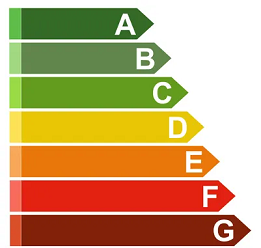
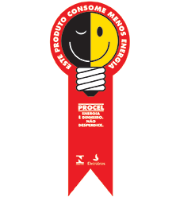

Nível 7


É importante sempre verificar o nível de eficiência energética de cada
equipamento eletrônico, cada letra indica uma a eficiência energética do
equipamento, sendo o A com a melhor eficiência e o G com a pior. Abaixo
uma lista dos equipamentos que devem possuir o selo PROCEL:
- Condicionadores de ar;
- Congeladores;
- Lâmpadas fluor compactas;
- Lâmpadas a vapor de sódio;
- Lâmpadas LED;
- Lavadoras;
- Luminárias LEDs;
- Microondas;
- Reatores para lâmpadas;
- Refrigeradores;
- Sistemas de aquecimento solar;
- Sistemas fotovoltaico;
- Televisores;
- Ventiladores;
APS 2022 - PRIMEIROS PASSOS PARA UMA CASA MAIS SUSTENTÁVEL
UNIP-CIÊNCIAS DA COMPUTAÇÃO